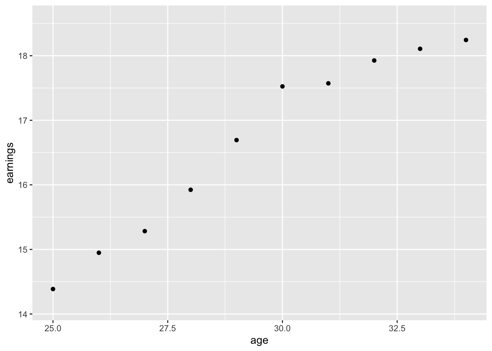
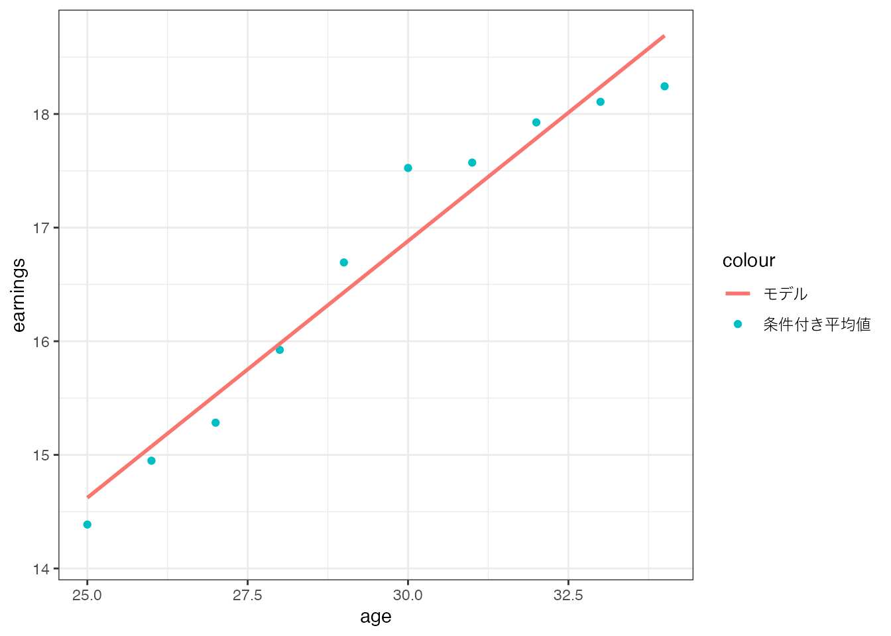

count(
CPSSW04,
degree,
gender) degree gender n
1 highschool male 2772
2 highschool female 1574
3 bachelor male 1901
4 bachelor female 1739データ分析において、結果を人間が理解できる形で要約することは不可欠です。 これは、分析結果は予測や推薦、社会構造に関する示唆など多様な形で提示されますが、最終的には意思決定者が理解できる形式で示す必要があるためです。
データの要約が必要な理由の理解
「条件付き分布 \(\rightarrow\) 条件付き平均値 \(\rightarrow\) 線型モデル」の順番で、変数間の関係性が要約できることの理解
具体的例を示すために、まずAER packageからCPSSW04データを読み込み、一部の事例を表示します。
library(tidyverse) # tidyverseパッケージの読み込み
data("CPSSW04", package = "AER") # データの読み込み
head(CPSSW04) # 一部の事例の抜き出し earnings degree gender age
1 34.61538 bachelor male 30
2 19.23077 bachelor female 30
3 13.73626 highschool female 30
4 19.23077 bachelor female 30
5 19.23077 bachelor male 25
6 38.46154 bachelor female 32CPSSW04はアメリカの労働者についての調査であり、四つの変数 (所得: earnings, 学位: degree, 性別: gender, 年齢: age) が観察できます。 また合計で 7986 事例が含まれています。
このような巨大なデータを直接理解できる人間は、おそらく存在しないでしょう。
そこで、最も基本的な要約方法は分布表を作成してみます。 分布とは、変数の値が同一である事例数を示します。 例えば、count関数を用いると、学位と性別の分布は次のように計算できます。
count(
CPSSW04,
degree,
gender) degree gender n
1 highschool male 2772
2 highschool female 1574
3 bachelor male 1901
4 bachelor female 1739\(n\) に事例数が表示されています。 例えば、男性で高校卒の事例は2,772件存在することがわかります。
割合を加えることで、データ全体に占める比率も把握できます。
degree gender n 割合
1 highschool male 2772 0.3471074
2 highschool female 1574 0.1970949
3 bachelor male 1901 0.2380416
4 bachelor female 1739 0.2177561CPSSW04において、全体の1/3程度が高校卒の男性であることなどがわかります。
CPSSW04には、earningsやageなどの連続変数も含まれています。 これらはCPSSW04データの特徴を理解する上で、非常に重要な変数でしょう。 しかしながら複数の連続変数を含めると、分布表は巨大になり、理解が困難です。
例えば、earnings, age, degree, genderについて、度数分布表を作成すると、4,649行の表が作成されます。 このような巨大な分布表の理解は、非常に困難です。
なお少数の連続変数の分布に注目するのであれば、ヒストグラムなどの分布を可視化するツール (Data visualization)を利用することで、人間が認識しやすくできます。 しかしながら複数の変数の分布を可視化することは、困難です。
分布全体の特徴ではなく、個別の変数の特徴を把握する方法も数多く提案されています。 中でも各変数の分布を、その特徴を表す統計量 (statistics) に要約する方法は有力です。
最も代表的なものは、平均値です。 例えばearningsの平均値 (平均所得) は、以下の方法で計算結果として定義できます。
\[ 平均所得 = \frac{第1事例の所得 + 第2事例の所得 +...}{事例数} \] 平均値は、分布のみを用いて計算することも可能です。
\[ 平均所得 = 1\times 「所得が1」の割合 \] \[ + 2\times 「所得が2」の割合 \tag{2.1}\]
無論、どちらの方法でも同じ値が計算されます。
CPSSW04に含まれるすべての変数について、summary関数は、他の統計量とともに、平均値を計算します。
summary(CPSSW04) earnings degree gender age
Min. : 2.098 highschool:4346 male :4673 Min. :25.00
1st Qu.:10.684 bachelor :3640 female:3313 1st Qu.:27.00
Median :14.904 Median :30.00
Mean :16.771 Mean :29.75
3rd Qu.:20.292 3rd Qu.:32.00
Max. :61.058 Max. :34.00 Meanに表示される数値が平均値です。 例えば、CPSSW04データにおける平均年齢は29.75才です。
平均値には、変数間の関係性を示さないという問題があります。 例えば、Table 2.2 を見ても、earningsとage,degree,genderの間の関係性について、何もわからないでしょう。
変数間の関係性を把握する方法には、数多くの提案があります。 ここでは条件付き母平均、および線型モデルを用いる方法を紹介します。
もし少数の目的変数と多数の説明変数の関係性を把握することが目標であれば、条件付き分布から計算できる条件付き平均値の利用が有効です。
条件付き分布は、ある特定の条件を満たす事例内での分布です。 例えば、「大学卒内でのearnings = 1の割合」は以下で計算できます。 \[ 大学卒内での「所得が1」の事例割合 \] \[ =\frac{大学卒かつ「所得が1」の事例割合}{大学卒の事例割合} \]
条件付き平均値は、ある特定の条件を満たす事例内での平均値です。 例えば、大学卒という条件を満たす平均年齢は以下のように計算できます。
\[ 大学卒の平均所得 \] \[ = 1\times 大学卒内での「所得が1」の割合 \] \[ + 2\times 大学卒内での「所得が2」の割合 +... \]
例えば、特定の年齢ごとに条件付き平均賃金を示してみます。
ggplot(
CPSSW04,
aes(
x = age,
y = earnings
)
) +
stat_summary(
geom = "point"
)
横軸は年齢、縦軸は平均所得、各点が年齢ごとの条件付き平均賃金を表します。 同図からは、年齢が上がれば、平均所得も上昇する傾向があることがわかります。
説明変数の数が多い場合、大量の条件付き平均値の数が計算されてしまい、理解が困難になります。 例えば、年齢・性別・学位について平均賃金を計算した場合、40 個の組み合わせが発生します。 データの事例数に比べれば、かなり少なくはなりますが、それでも理解には時間がかかるでしょう。
大量の変数間の関係性を要約するために、線形モデルを適用する方法が広く用いられます。 例えば、賃金と年齢・学位・性別の関係を次のモデルで表すことを目指します。 \[ \beta_0 + \beta_1\times age + \beta_2\times degree + \beta_3\times gender \tag{2.2}\]
ただしdegreeとgenderの値は、数字ではなく、文字です。 線型モデルに導入する際には、何らかの数字に変換する必要があります。
ここではbachelorとgenderをダミー変数、degreebachelorとgenderfemale、に変換します。 ダミー変数は、以下のように定義されます。
degreebachelor: degreeがbachelorだった場合は1、その他の場合は0
genderfemale: genderがfemaleだった場合は1、その他の場合は0
\(\beta_0,\beta_1,\beta_2,\beta_3\) はパラメタと呼ばれ、モデルがデータに極力一致するように選ばれます。 このようにデータに合うように設定したモデルの特徴を調べることで、データの特徴を大雑把に理解することができます。
モデルをデータに適合される典型的な方法はOLS (最小二乗法) です。 具体的な計算方法を紹介する前に、Rでの実行方法から紹介します。 Rでは、lm関数を用いることで、OLSを容易に実行できます。 例えば、以下のコードで、Equation 2.2 を CPSSW04に適合させることができます。
lm(earnings ~ age + degree + gender, CPSSW04)
Call:
lm(formula = earnings ~ age + degree + gender, data = CPSSW04)
Coefficients:
(Intercept) age degreebachelor genderfemale
1.8838 0.4392 6.8651 -3.1579 各説明変数名の下の数値が、パラメタの計算結果です。 Equation 2.2 のようなシンプルな線型モデルにおいて、パラメタは各説明変数と結果変数であるearningsの「モデル上での関係性」を表します。 推定結果から、年齢や大学卒は賃金と正の関係があり、男性に比べて女性の賃金が低い傾向にあることがわかります。
線型モデルに要約することで、変数間の関係性を「ざっくり」把握することができます。 注意が必要なのは、以上の方法では、どのようなモデルをデータに適合させるのかは、分析者が決定する必要がある点です。
どのようなモデルが適しているのかは、研究目標により異なります。 「人間がデータの大雑把な特徴を理解する」ことを目標にするのであれば、Equation 2.2 のような、シンプルなモデルが有力です。 このような大雑把な理解を目標に設定されたモデルは、記述モデルと呼ばれます1。
OLSの具体的な計算方法を紹介します。 基本的なアイディアは、データとモデルの乖離度合いを測定する指標である、平均二乗誤差を極力小さくするようにパラメタを算出するというものです。
例えば、ageのみを説明変数として、earningsについて、以下の線形モデルを設定します。 \[ \beta_0 + \beta_1\times age \] ある事例 \(i\) についての二乗誤差は以下のように定義されます。 \[ 事例iの二乗誤差=(事例 i の所得 - \underbrace{(\beta_0+\beta_1\times 事例iのage)}_{モデルが算出する賃金})^2 \]
OLSは全ての事例について、二乗誤差の平均値 (平均二乗誤差)を最小にするようにパラメタを算出します。
平均値と同様に、OLSも別の計算方法があります。 この方法は、分布と条件付き平均値のみを用いて計算できます。 以下の条件付き平均値についての二乗誤差を最小化するようにパラメタの値を算出します。
\[ (25才の平均所得 - (\beta_0+\beta_1\times 25))^2\times 25才の割合 \] \[ + (26才の平均所得 - (\beta_0+\beta_1\times 26))^2\times 26才の割合 \] \[ +... \]
こちらの計算方法では、パラメタを「モデルが条件付き平均値に極力適合するように決定」するので、算出されたモデルは条件付き母平均のモデルであると解釈できます。 この解釈は、社会データについてのデータ分析において現実的であり、多くの教科書で採用されています (Angrist and Pischke 2009; Aronow and Miller 2019; Chernozhukov et al. 2024)。
線型モデルは、あくまで関係性を単純化するため、実際の条件付き平均値を完全には反映しません。
例えばearningsについて、\(\beta_0 + \beta_1\times age\) をOLSで当てはめてみます。 実際の条件付き平均値とモデルの関係性は、以下でした。

各点は年齢ごとの条件付き平均値、直線がOLSで推定された線型モデルとなります。
線形モデルは、平均賃金と年齢が概ね右上がりの関係 (高年齢は賃金が高い)を捉えることができています。 ただし実際の平均賃金と年齢の関係性は、モデルのように”一直線”ではありません。 線形モデルは、この特徴を捉えることには失敗しています。
データ分析では、記述を目的としないモデルの推定を目指すことがあります。例えば結果変数の値の予測を目指すモデルは、予測モデルと呼ばれます。予想モデルについては、分析者がモデルの詳細な構造を理解することを主たる目的としないため、より複雑なモデルが設定されます。↩︎